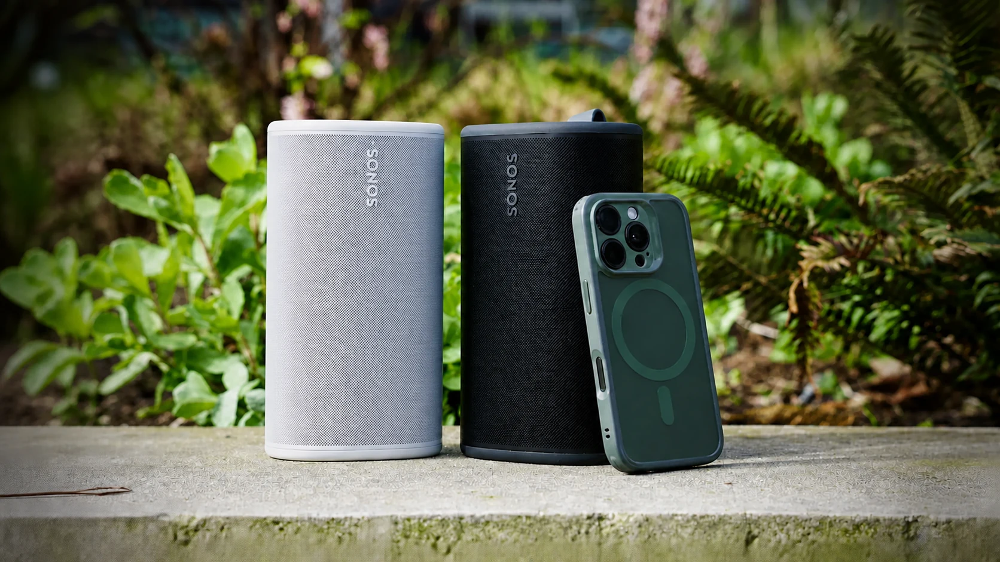
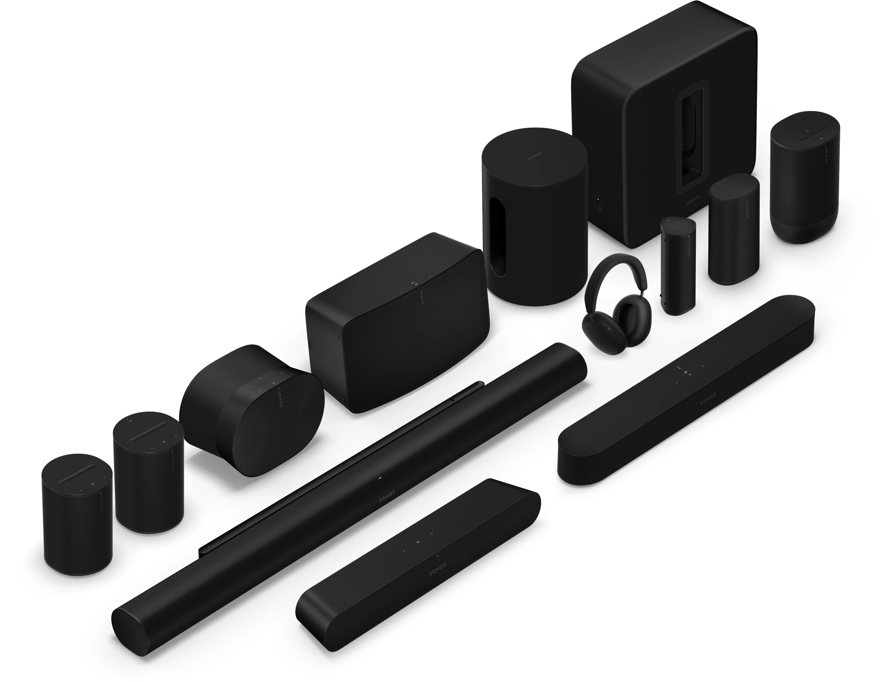
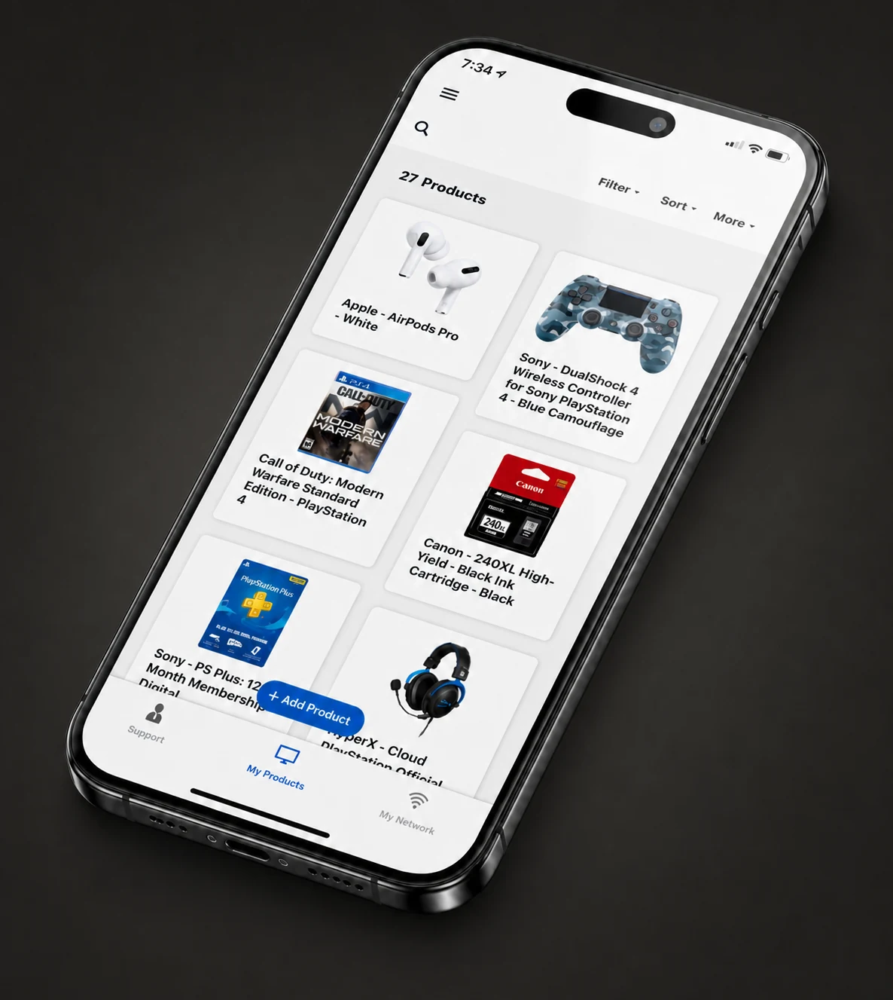

01 / Sonos
Making complexity feel simple
Aligning product, security, and engineering around a clear customer promise for grouping beyond the home.
Experience strategy · Cross-functional alignment · Launch decisions
Read case study
Hey, I’m John.
01 / Sonos
Aligning product, security, and engineering around a clear customer promise for grouping beyond the home.
Experience strategy · Cross-functional alignment · Launch decisions
Read case study
02 / Sonos
Creating a shared hardware UX language that helped Sonos scale without losing what made the system feel coherent.
Systems leadership · Experience principles · Organizational leverage
Read case study
03 / Sonos
Redesigning priorities, partnerships, and development to preserve strategic coverage through organizational change.
Organizational design · Portfolio leadership · Team development
Read case study
04 / Best Buy
A post-purchase experience designed to support customers, deepen engagement, and build loyalty.
Product strategy · Design leadership · Team growth
Contact for details
05 / INRIX
A flexible design system for an in-car application ecosystem spanning automakers, developers, and drivers.
Design systems · Automotive UX · Platform strategy
Contact for detailsHero image: an in-car interface shown across a small family of dashboard configurations.
About